Items
Dota 2 posee varios items que la mayoría pueden comprarse en las diferentes tiendas ubicadas en su mapa, y son lo que cambia el rumbo de cualquier partida. Para que haga efecto, el item en cuestión tiene que estar en el inventario del heroe, y ser activado o consumido si así lo requiere.
- 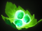
Tango
Hace que el héroe consuma un árbol y recupere vida progresivamente. - 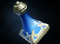
Clarity
Se consume para recuperar mana progresivamente. - 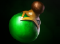
Healing Salve
Se consume para recuperar vida progresivamente. - 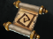
Town Portal Scroll
Sirve para telestranportarse a cualquier torre aliada. - 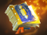
Tome of Knowledge
Se consume para que el héroe gane experiencia automáticamente. - 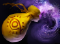
Dust of Appearance
Revela enemigos invisibles - 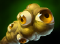
Observer Ward
Se ubica en cualquier zona del mapa y ofrece visión a su alrededor por 6 minutos. - 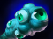
Sentry Ward
Se ubica en cualquier zona del mapa y revela las unidades enemigas invisibles a su alrededor por 4 minutos. - 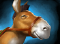
Animal Courier
Actúa como una unidad aliada y permite llevar items de un shop a la posición del héroe que requiera usarlo. - 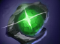
Gem of True Sight
Revela unidades invisibles, wards y sentries alrededor de su portador, pero se cae al morirse. - 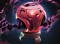
Blight Stone
Disminuye la armadura del enemigo en 2 puntos cada vez que se lo ataca con un ataque básico. Orb of Venom
Al golpear a un enemigo, disminuye su velocidad de movimiento y hace daño progresivamente.
Blink Dagger
Permite al héroe telestranportarse inmediatamente a un radio de distancia moderada alrededor suyo.- 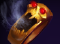
Soul Ring
Sacrifica una porción de vida a cambio de mana. - 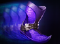
Phase Boots
Provee velocidad de movimiento y permite traspasar unidades cuando se lo activa. - 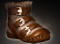
Power Treads
Provee velocidad de movimiento y da puntos en uno de los tres atributos. - 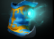
Mana Boots
Hace que él y sus aliados alrededor recuperen mana. - 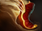
Travel Boots
Provee gran velocidad de movimiento y permite telestranportarse a cualquier torre aliada. 
Hand of Midas
Consume un creep a cambio de oro y experiencia.- 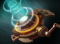
Mekansm
Cura a todos los aliados de su alrededor. - 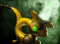
Pipe of Insight
Bloquea una porción del daño mágico del portador y sus aliados alrededor. - 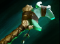
Force Staff
Empuja a cualquier unidad hacia adelante. - 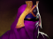
Veil of Discord
Disminuye la resistencia mágica enemiga. - 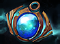
Aether Lens
Aumenta la distancia en la que el portador puede usar sus habilidades y aumenta el daño de ellos. - 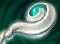
Eul's Scepter of Divinity
Hace que una unidad enemiga entre en un tornado, incapacitándolo por un tiempo. - 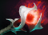
Orchid Malevolence
Silencia a una unidad enemiga, y una porción del daño que reciba durante su efecto, lo recibe adicionalmente cuando se termina. - 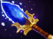
Aghanim's Scepter
Permite mejorar las habilidades de algunos héroes. Refresher Orb
Resetea el tiempo de espera de todas las habilidades e items que estén en cooldown.
Scyte of Vyse
Transforma a una unidad enemigo en un animal, incapacitándolo totalmente.
Otarine Core
Reduce el tiempo de espera de todas las habilidades e items, y una porción del daño generado por las habilidades se recupera como vida.- 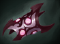
Armlet of Mordiggian
Hace que el portador pierda vida progresivamente a cambio de daño generado y velocidad de ataque. - 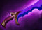
Shadow Blade
Permite volverse invisible por un tiempo y moverse rápidamente mientras tanto. - 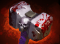
Skull Basher
Da la posibilidad de stunnear al enemigo al hacer un ataque básico. 
Black King Bar
Provee inmunidad mágica.- 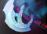
Manta's Style
Permite crear dos ilusiones de si mismo. Linken's Orb
Permite bloquear un hechizo cada cierto tiempo.- 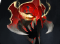
Mask of Madness
Da velocidad de ataque a cambio de recibir daño adicional. - 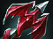
Dragon Lance
Permite atacar desde rango adicional. - 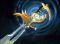
Echo Sabre
Permite atacar dos veces en 0.6 segundos cada cierto tiempo. Desolator
Disminuye la armadura del enemigo en 7 puntos cada vez que se lo ataca con un ataque básico.- 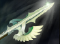
Heaven's Halberd
Desarma a un enemigo, impidiéndole atacar por un tiempo. - 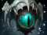
Eye of Skadi
Los ataques básicos del portador se vuelven ataques de hielo, que disminuyen la velocidad de movimiento y de ataque del objetivo. - 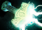
Mjollnir
Da la posibilidad de que los ataques básicos desencadenen una serie de rayos eléctricos que saltan de unidad en unidad, dañándolos. - 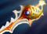
Divine Rapier
Da un bonus de daño enorme, pero se cae al morir. - 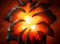
Aegis of the Immortal
Revive a su portador una vez que éste muere. En ese momento se consume y desaparece.